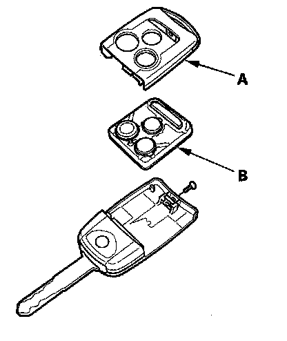
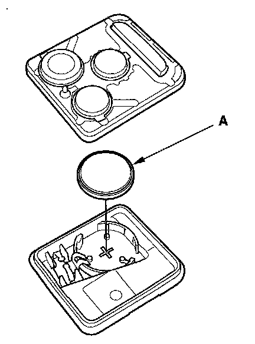
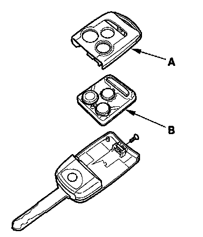
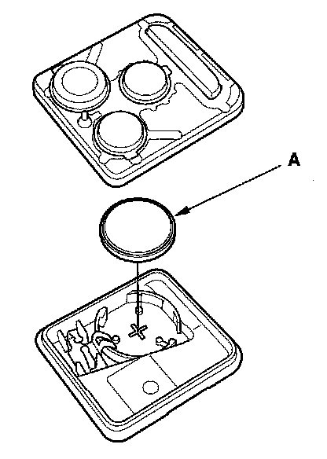

Transmitter Test/Replacement
Transmitter Test/ReplacementNOTE:
- If the doors unlock or lock with the transmitter, but the LED on the transmitter does not come on, the LED is faulty; replace the transmitter.
- If any door is open, you cannot lock the doors with the transmitter.
- If you unlocked the doors with the transmitter, but do not open any of the doors within 30, 60, or 90 seconds, the doors relock automatically.
- The lock or unlock does not work with the transmitter if the ignition key is inserted in the ignition switch.
With HDS
1. Press the lock or unlock button five or six times to reset the transmitter.
- If the locks work, the transmitter is OK.
- If any of the transmitter buttons does not work, replace the transmitter, then manually reprogram the transmitter.
- If the locks don't work, go to step 2.
2. Connect the HDS to the data link connector.
3. Select KEYLESS from the BODY ELECTRICAL menu, then enter the KEYLESS CHECK.
4. Press lock, unlock, trunk, or panic button and check the response on the screen of the HDS.
NOTE: The door lock actuators may or may not cycle when receiving input from the transmitter.
- If KEYLESS ENTRY TRANSMITTER CODE IS RECEIVED is indicated, the transmitter is OK.
- If DIFFERENT KEYLESS ENTRY TRANSMITTER CODE IS RECEIVED is indicated, the transmitter is not registered to the vehicle, if necessary, manually reprogram the transmitter.
- If KEYLESS ENTRY TRANSMITTER CODE IS NOT RECEIVED is indicated, go to step 5.

5. Remove the transmitter cover (A) from the transmitter (B), and check for water damage.
- If you find any water damage, replace the transmitter, then manually reprogram the transmitter.
- If there is no water damage, go to step 6.

6. Replace the transmitter battery (A) with a new one, and press lock or unlock button and check the receive condition on the screen of the HDS.
- If KEYLESS ENTRY TRANSMITTER CODE IS RECEIVED is indicated, the transmitter is OK.
- If KEYLESS ENTRY TRANSMITTER CODE IS NOT RECEIVED is indicated, go to step 7.
7. Use a different known-good keyless transmitter assembly and repeat steps 3 and 4.
NOTE: The keyless transmitter does not need to be programmed to the vehicle for this test.
- If DIFFERENT KEYLESS ENTRY TRANSMITTER CODE IS RECEIVED is indicated, replace the keyless transmitter and manually reprogram the transmitter.
- If KEYLESS ENTRY TRANSMITTER CODE IS NOT RECEIVED is indicated, the immobilizer-keyless control unit is faulty, replace it and do the immobilizer system registration.
Without HDS
1. Start the engine.
- If the engine does not start, go to the immobilizer system troubleshooting.
- If the engine starts, go to step 2.
2. Press the lock or unlock button five or six times to reset the transmitter.
- If the locks work, the transmitter is OK.
- If the locks don't work, go to step 3.
3. Manually program the transmitter. If the transmitter does not program, go to step 4.
4. Manually program a known-good transmitter.
- If you can program the transmitter, replace the original transmitter.
- If you can not program the transmitter, replace the original transmitter, go to step 5.

5. Remove the transmitter cover (A) from the transmitter (B), and check for water damage.
- If you find any water damage, replace the transmitter.
- If there is no water damage, go to step 6.

6. Replace the transmitter battery (A) with a new one, and try to lock and unlock the doors with the transmitter by pressing the lock or unlock button five or six times.
- If the doors lock and unlock, the transmitter is OK.
- If the doors don't lock and unlock, the HDS will be required for further diagnosis.